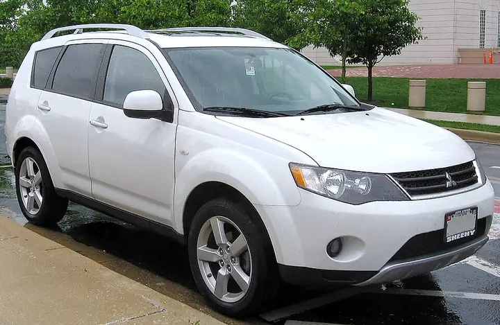
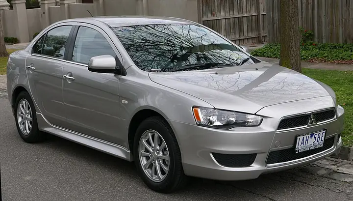
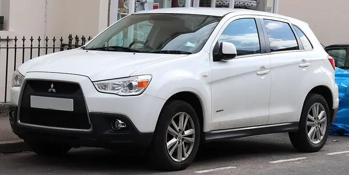
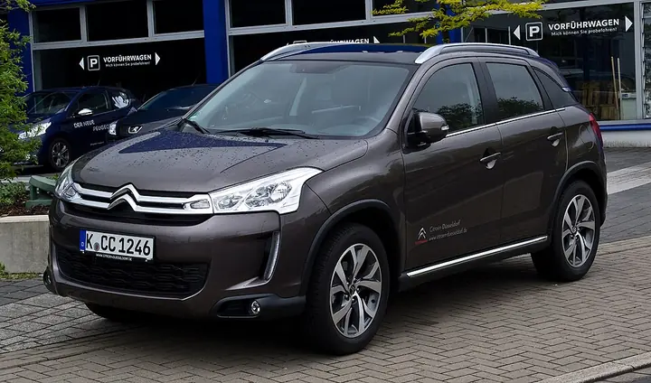
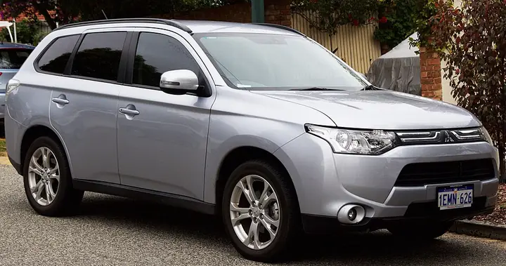
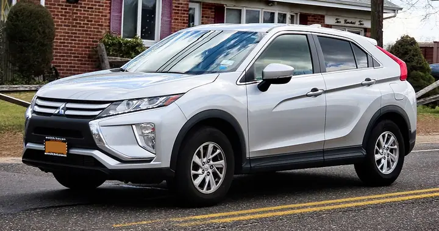
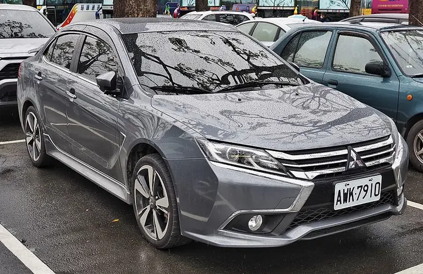

Platform
Mitsubishi GS
12 generations of 10 models by Mitsubishi, Citroën, Peugeot and Proton, 2006–present.
The cars

Mitsubishi Outlander · Second generation (CW/ZG/ZH; 2006)- Citroën C-Crosser
 Mitsubishi Delica · Fifth generation (2007)
Mitsubishi Delica · Fifth generation (2007)
Mitsubishi Lancer · Ninth generation (2007) Peugeot 4007
Peugeot 4007
Mitsubishi ASX · First generation (GA; 2010) Proton Inspira
Proton Inspira
Citroën C4 Aircross
Mitsubishi Outlander · Third generation (GF/GG/ZJ/ZK/ZL; 2012) Peugeot 4008
Peugeot 4008
Mitsubishi Eclipse Cross · First generation (GK/GL/YA/YB; 2017)
Mitsubishi Lancer · Tenth generation (2017)